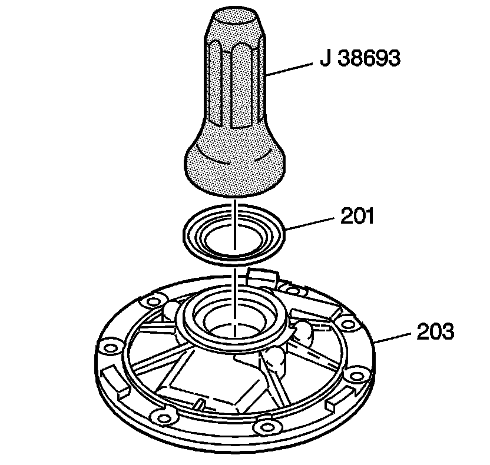
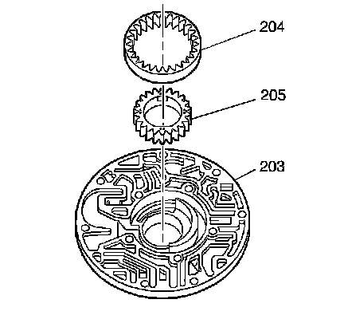

Transmission Oil Pump Body Assemble
Transmission Oil Pump Body Assemble
Tools Required
J 38693 Oil Pump Seal Installer

1. Using the J 38693, install the torque converter oil seal assembly (201).

2. Lubricate the oil pump drive gear (205) and driven gear (204) with DEXRON(R)VI automatic transmission fluid.
Important: The identification dots on the oil pump drive gear (205) must be facing up in order to ensure correct orientation of the drive flats.
3. Install the oil pump driven gear (204) and drive gear (205) with the identification dots facing up.